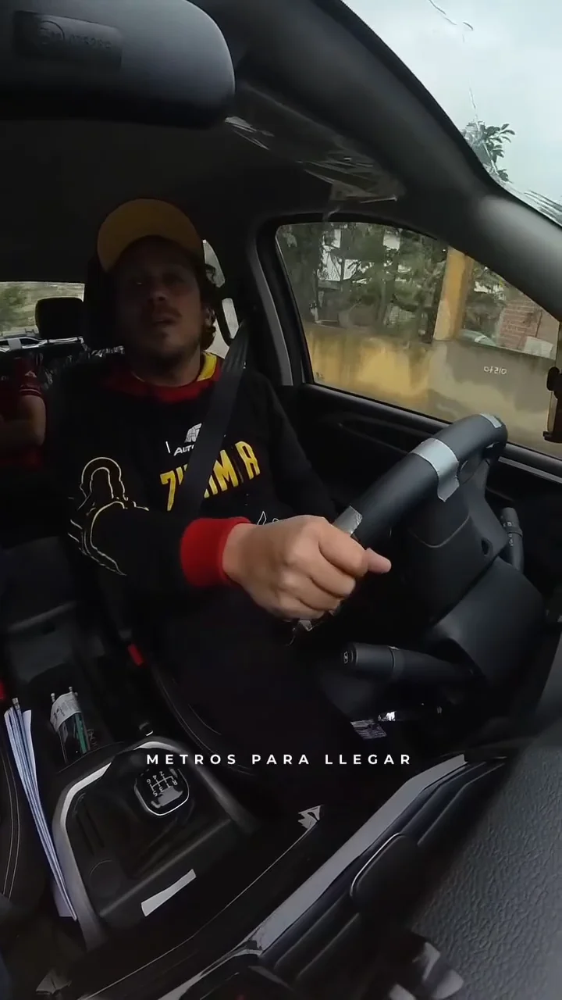
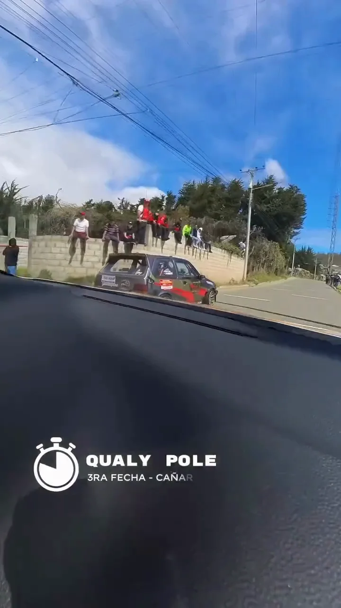
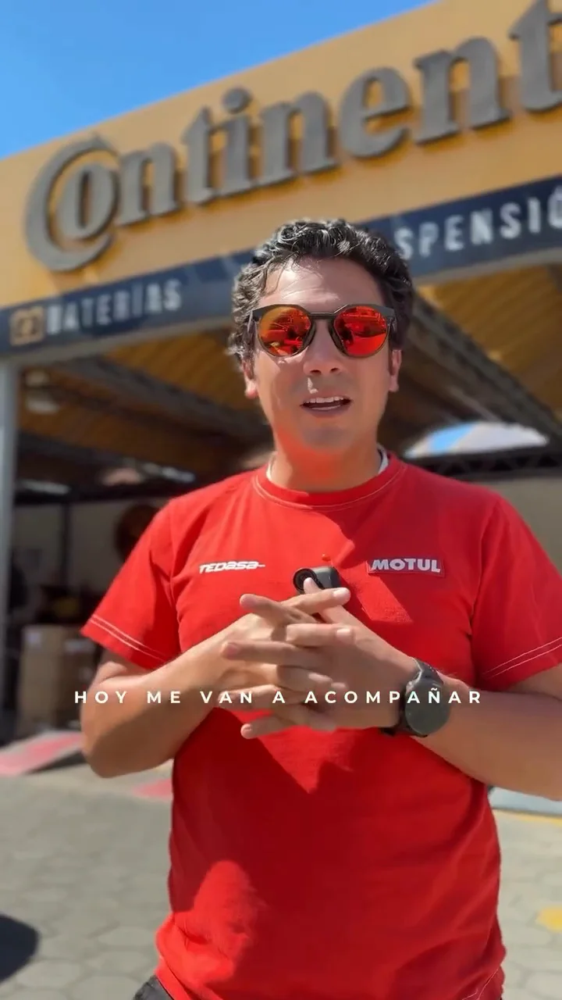
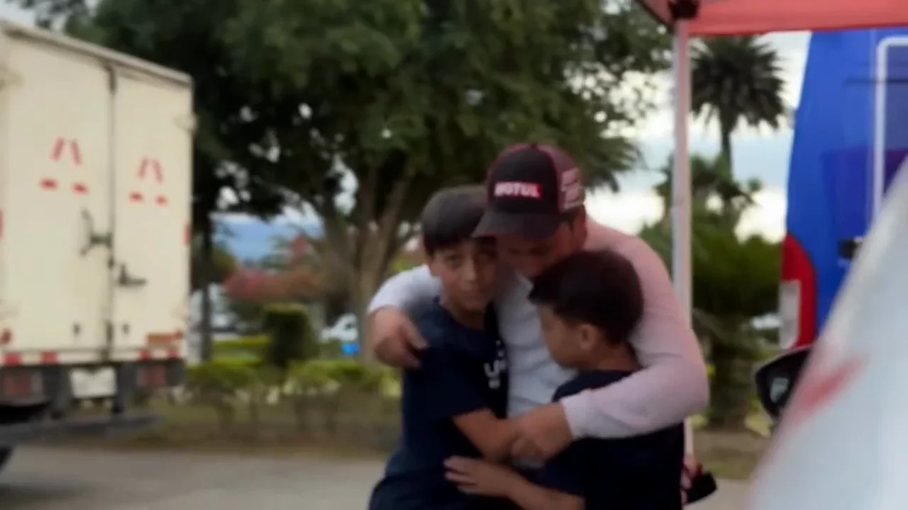
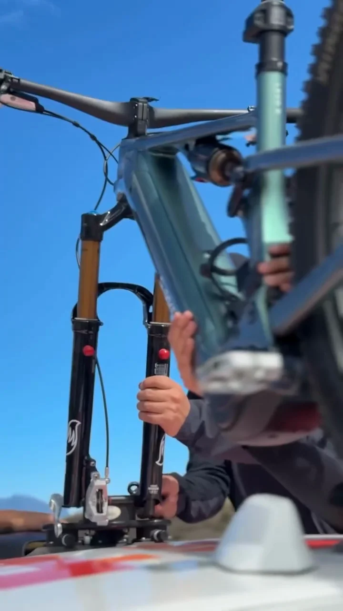
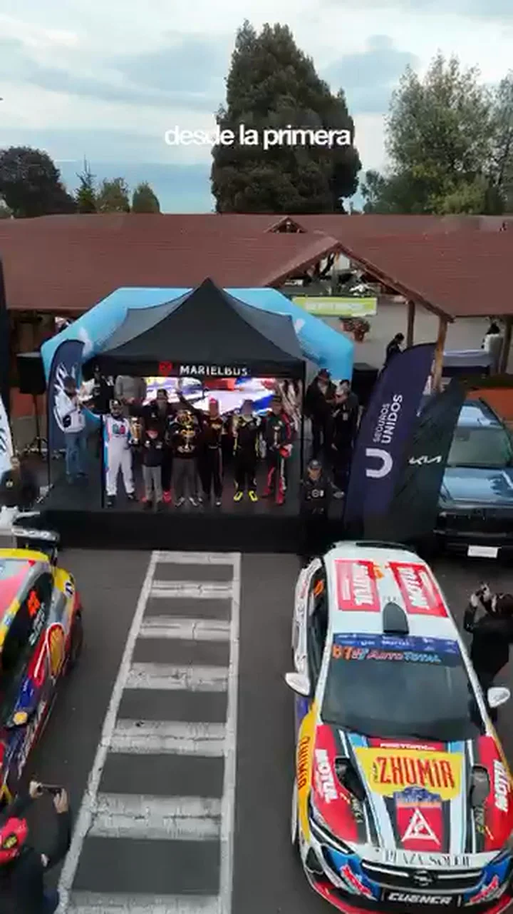
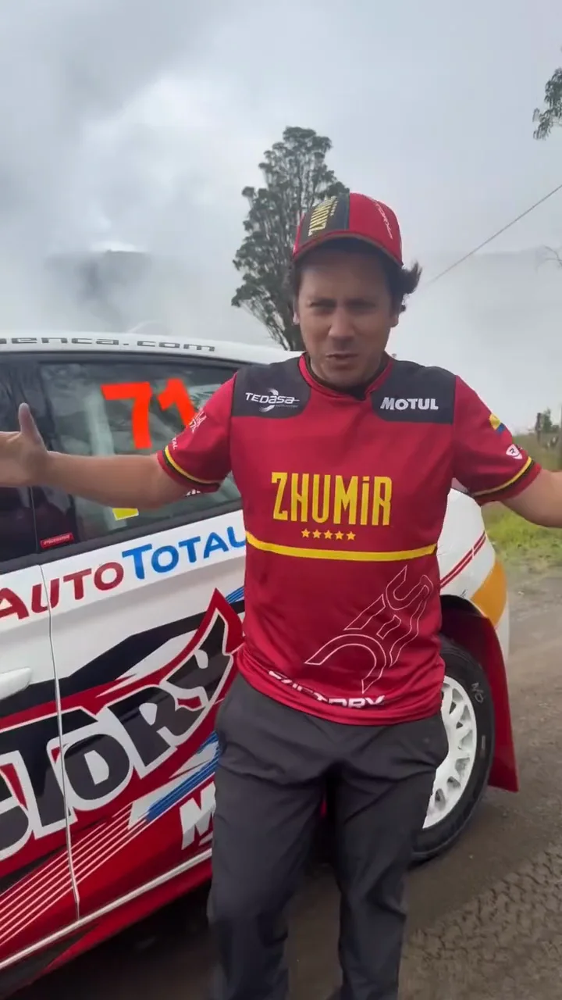

Diego Serrano
Integra a sus marcas de forma natural y habla a cámara con claridad.
seguidores en Instagram
reproducciones promedio por publicación
engagement promedio, estable en toda la muestra
publicaciones con relación directa con su afición
Por qué una marca lo elegiría
Piloto de rally y del Nacional de Circuitos. Encuadra cada resultado como un logro del equipo y ya demuestra integración narrativa real con marcas, no solo exposición del logo.
- 2026Pole y victoria en la 3.ª válida del Nacional de Circuitos, Cañar
- 2026Campeonato Nacional de Rally
- 2026Activaciones con marcas aliadas en boxes y en ruta
Lo que construimos juntos
Cobertura en tiempo real, activaciones con marcas, arte gráfico y resúmenes de carrera. Solo piezas creadas en colaboración con Pro Motion.







Datos de Instagram al 21 de octubre de 2026 · @pro_motion.ec
¿Qué marca encaja con Diego?
Toca un sector para ver una idea de activación basada en lo que su contenido ya demuestra.
Elige un sector.


Ficha tentativa elaborada por Pro Motion Sport Marketing con datos públicos de Instagram (octubre de 2026) y la auditoría ProMatch del 9 de agosto de 2026. Los logros marcados como “declarado” fueron entregados por el deportista o su equipo. El puntaje ProMatch mide la preparación comercial observada en el contenido, no la probabilidad de conseguir un auspicio, y no implica un acuerdo comercial vigente.
Diseñemos una activación con Diego
Recibe una propuesta de activación con entregables, calendario y rango de inversión.